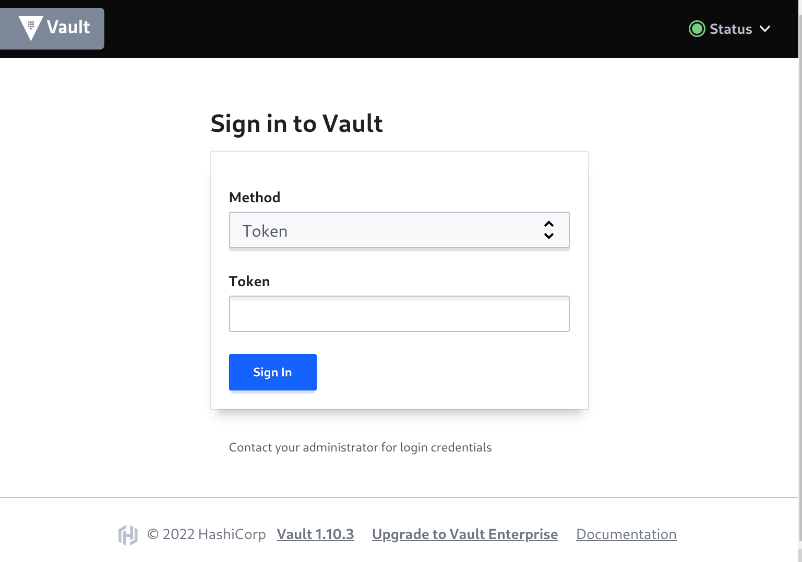
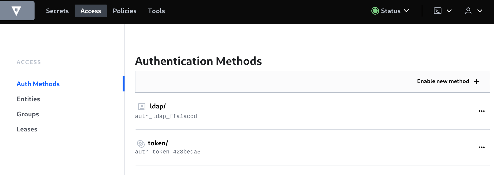
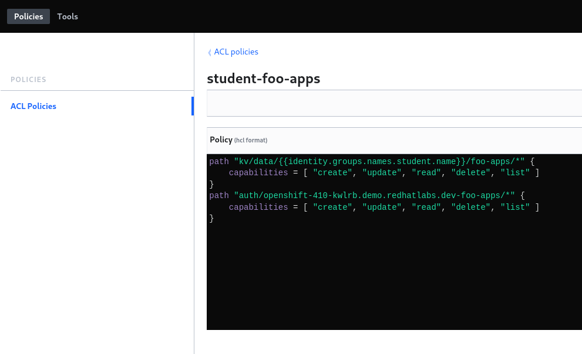
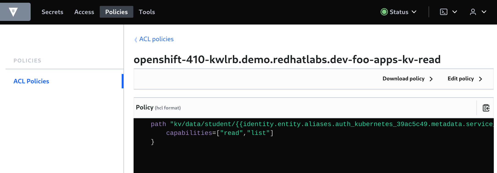
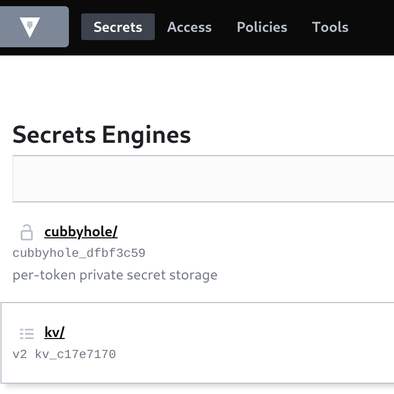

Vault Configuration
Namespace and Mount Structuring Guide
⛷️ TIP ⛷️ - Skip the background reading if you want, but at some point you will need it !
For this demo, there are a few recommended patterns and background reading on ACL Policy templating that should be considered a MUST read. In particular watch the Youtube Video. Also checkout the References links.
We will:
- setup vault self-service where team users can manage their own key values on a per team/application basis
- leverage Vault identities and vault ACL templates for ensuring that apps can only read their own secrets
- we do not use vault namespaces (they are an enterprise feature)
- deploy an app and connect it to vault using an app k8s service-account
- app k8s service-account can read, list secrets for that app only using ACL's
- users in the team group have full access to their team secrets
- admins must configure
- project, vault policy
- team users can configure
- app secrets, app service accounts, vault config for these
Everything in vault is path based. The Paths we setup in vault are as follows.
== Access ==
ldap/ <-- ldap users in $TEAM_GROUP
token/ <-- default, token
$BASE_DOMAIN-$PROJECT_NAME/$APP_NAME <-- kubernetes roles by cluster-project/app
== Groups ==
$TEAM_GROUP/ <-- ldap entity ids (users) for $TEAM_GROUP
== Secrets ==
kv/ <-- kv version 2
kv/$TEAM_GROUP <-- team group secrets
kv/$TEAM_GROUP/$PROJECT_NAME <-- project secrets
kv/$TEAM_GROUP/$PROJECT_NAME/$APP_NAME <-- app secrets kvv2
== Policies ==
$TEAM_GROUP_$APP_NAME/ <-- users in $TEAM_GROUP CRUDL on kv/TEAM_GROUP
<-- k8s app sa auth/$BASE_DOMAIN-$PROJECT_NAME CRUDL
$BASE_DOMAIN-$PROJECT_NAME-kv-read <-- k8s app sa RL on kv/$TEAM_GROUP/$PROJECT_NAME/$APP_NAME
Notes: CRUDL = create, read, update, delete, list
Login and check vault
Login to vault using the environment vars and token.
vault login token=${ROOT_TOKEN}
If all is OK, you should see.
Success! You are now authenticated. The token information displayed below is already stored in the token helper. You do NOT need to run "vault login" again. Future Vault requests will automatically use this token. Key Value --- ----- token this-is-not-my-token token_accessor this-is-not-my-token-accessor token_duration ∞ token_renewable false token_policies ["root"] identity_policies [] policies ["root"]
We can check vault quorum is OK.
vault operator raft list-peers
Node Address State Voter ---- ------- ----- ----- vault-0 vault-0.vault-internal:8201 leader true vault-1 vault-1.vault-internal:8201 follower true vault-2 vault-2.vault-internal:8201 follower true
If you browse to the Web UI you should be able to login using your token as well.

Team based access
There are many authentication methods supported by vault.
We use the FreeIPA helm chart in our OpenShift cluster to provision users.
We will leave this as an exercise for the user to configure in your own cluster and I will leave this automation breadcrumb trail and helm chart hint to get you going:
helm upgrade --install ipa redhat-cop/ipa --namespace=ipa \
--create-namespace --set app_domain={{ apps_domain }} \
--set admin_password={{ ldap_admin_password | quote }} \
--set ocp_auth.enabled=true \
--set ocp_auth.bind_password={{ ldap_admin_password | quote }} \
--set ocp_auth.bind_dn={{ bind_dn | quote }} --timeout=45m
LDAP
We can easily configure vault to authenticate with LDAP. Export our binddn user password.
export LDAP_BIND_PASSWORD=this-is-not-my-password
Change dn's to suit your ldap configuration, enable auth login for vault.
vault auth enable ldap
vault write auth/ldap/config \
url="ldap://ipa.ipa.svc.cluster.local:389" \
binddn="uid=ldap_admin,cn=users,cn=accounts,dc=redhatlabs,dc=com" \
bindpass="$LDAP_BIND_PASSWORD" \
userdn="cn=users,cn=accounts,dc=redhatlabs,dc=com" \
userattr="uid" \
groupdn="cn=student,cn=groups,cn=accounts,dc=redhatlabs,dc=com" \
groupattr="cn"
If you login to vault from the Web UI you should see this Access > Auth Methods > ldap auth method.

We can now try ldap using a regular user (mike). Our user mike is part of the student group in LDAP.
vault login -method=ldap username=mike
If all is OK, you should see.
Password (will be hidden): Success! You are now authenticated. The token information displayed below is already stored in the token helper. You do NOT need to run "vault login" again. Future Vault requests will automatically use this token. Key Value --- ----- token this-is-not-mikes-token token_accessor this-is-not-mikes-token-accessor token_duration 768h token_renewable true token_policies ["default"] identity_policies [] policies ["default"] token_meta_username mike
Team Setup
Admin
We have a team name and group configured in LDAP. RBAC within OpenShift is configured against this group. We will use this same group name in our vault configuration and setup.
As a cluster-admin we are going to create and configure the team project and vault policies. This sort of on-boarding workflow is pretty common and often automated for OpenShift clusters.
Provision a team namespace. The $TEAM_GROUP needs to match the LDAP groupdn from above i.e. it is student.
export TEAM_NAME=foo
export TEAM_GROUP=student
export PROJECT_NAME=${TEAM_NAME}-apps
oc new-project ${PROJECT_NAME}
Bind our team via the team group so they are project admin's.
cat <<EOF | oc apply -f-
kind: RoleBinding
apiVersion: rbac.authorization.k8s.io/v1
metadata:
name: ${TEAM_GROUP}-admin
namespace: ${PROJECT_NAME}
subjects:
- kind: Group
apiGroup: rbac.authorization.k8s.io
name: ${TEAM_GROUP}
roleRef:
apiGroup: rbac.authorization.k8s.io
kind: ClusterRole
name: admin
EOF
We need to create a k8s service account for the application that our team will deploy. This service account will be used to authenticate to vault using the k8s authentication mechanism. By defult, this is a cluster admin privileged action - otherwise we could have let the user do it.
export APP_NAME=vault-quickstart
oc -n ${PROJECT_NAME} create sa ${APP_NAME}
oc adm policy add-cluster-role-to-user system:auth-delegator -z ${APP_NAME} -n ${PROJECT_NAME}
Now we can login to vault and create the ACL policy. There are two parts to the policy.
The first path in our policy uses an ACL template. This allows team users who are part of the $TEAM_GROUP (student in our case) to create key-value data aka secrets, under the project specific path. The template is a type of membership check as the user must be part of the student group for them to CRUDL under this kv/ path.
The second path in our policy allows CRUDL access for auth/ under $BASE_DOMAIN-$PROJECT_NAME. We use this to create k8s config that the application service account may use to authenticate to vault. This is cluster-project specific.
vault login token=${ROOT_TOKEN}
vault policy write $TEAM_GROUP-$PROJECT_NAME -<<EOF
path "kv/data/{{identity.groups.names.$TEAM_GROUP.name}}/$PROJECT_NAME/*" {
capabilities = [ "create", "update", "read", "delete", "list" ]
}
path "auth/$BASE_DOMAIN-$PROJECT_NAME/*" {
capabilities = [ "create", "update", "read", "delete", "list" ]
}
EOF

Next we can create the identity/group in vault that matches our LDAP team group.
We need our list of user ID's to attach to the group. The Web UI makes this easy, but its hard from the CLI. Luckily we only have the one identity entity from our previous mike ldap login.
vault list identity/entity/id
Keys ---- 465ea512-80b4-ee7a-4ff2-b992149140b0
We need this and our $TEAM_GROUP-$PROJECT_NAME policy to add to our group in vault. The parameters policies and member_entity_ids are lists so if we have multiple team members and projects we can include them and/or update this when needed.
vault write identity/group name="$TEAM_GROUP" \
policies="$TEAM_GROUP-$PROJECT_NAME" \
member_entity_ids=465ea512-80b4-ee7a-4ff2-b992149140b0 \
metadata=team="$TEAM_GROUP"
We need to enable k8s based authentication in vault. We create it using a path based on the cluster-project we used in the policy above. Run the following commands.
vault auth enable -path=$BASE_DOMAIN-${PROJECT_NAME} kubernetes
vault auth list
To allow our application service account to read and list (RL) secrets, we use another ACL template for kv/ that uses the k8s auth accessor in the path. The application service account can therefore only RL secrets that match its name and namespace in the path.
export MOUNT_ACCESSOR=$(vault auth list -format=json | jq -r ".\"$BASE_DOMAIN-$PROJECT_NAME/\".accessor")
vault policy write $BASE_DOMAIN-$PROJECT_NAME-kv-read -<< EOF
path "kv/data/$TEAM_GROUP/{{identity.entity.aliases.$MOUNT_ACCESSOR.metadata.service_account_namespace}}/{{identity.entity.aliases.$MOUNT_ACCESSOR.metadata.service_account_name}}" {
capabilities=["read","list"]
}
EOF
vault policy read $BASE_DOMAIN-$PROJECT_NAME-kv-read

Lastly, as root we need to enable the KVV2 secrets engine (not to be confused with a V1 kv engine).
vault secrets enable -path=kv/ -version=2 kv

Non-Admin
We can now create our vault config as our student team user mike. Login to vault and OpenShift.
oc login --server=https://api.${BASE_DOMAIN}:6443 -u mike
vault login -method=ldap username=mike
We should see the policy created by admin above.
Key Value --- ----- token this-is-not-mikes-token token_accessor this-is-not-mikes-token-accessor token_duration 768h token_renewable true token_policies ["default"] identity_policies ["student-foo-apps"] policies ["default" "student-foo-apps"] token_meta_username mike
Let's create the $APP_NAME based auth role.
vault write auth/$BASE_DOMAIN-$PROJECT_NAME/role/$APP_NAME \
bound_service_account_names=$APP_NAME \
bound_service_account_namespaces=$PROJECT_NAME \
policies=$BASE_DOMAIN-$PROJECT_NAME-kv-read \
period=120s
We need to create the auth config that allows the service account token to be used to do a k8s based login to vault. Lets get the service account token and ca cert.
export SA_TOKEN=$(oc -n ${PROJECT_NAME} get sa/${APP_NAME} -o yaml | grep ${APP_NAME}-token | awk '{print $3}')
export SA_JWT_TOKEN=$(oc -n ${PROJECT_NAME} get secret $SA_TOKEN -o jsonpath="{.data.token}" | base64 --decode; echo)
export SA_CA_CRT=$(oc -n ${PROJECT_NAME} get secret $SA_TOKEN -o jsonpath="{.data['ca\.crt']}" | base64 --decode; echo)
We can create the auth config using these.
vault write auth/$BASE_DOMAIN-${PROJECT_NAME}/config \
token_reviewer_jwt="$SA_JWT_TOKEN" \
kubernetes_host="$(oc whoami --show-server)" \
kubernetes_ca_cert="$SA_CA_CRT"
We need some KV data for our application to read. Let's create some.
vault kv put kv/$TEAM_GROUP/$PROJECT_NAME/$APP_NAME \
app=$APP_NAME \
username=foo \
password=bar
Which we can check.
vault kv get kv/$TEAM_GROUP/$PROJECT_NAME/$APP_NAME
============== Secret Path ============== kv/data/student/foo-apps/vault-quickstart ======= Metadata ======= Key Value --- ----- created_time 2022-05-26T09:56:02.897208905Z custom_metadatadeletion_time n/a destroyed false version 1 ====== Data ====== Key Value --- ----- app vault-quickstart password bar username foo
Time to test out our application.